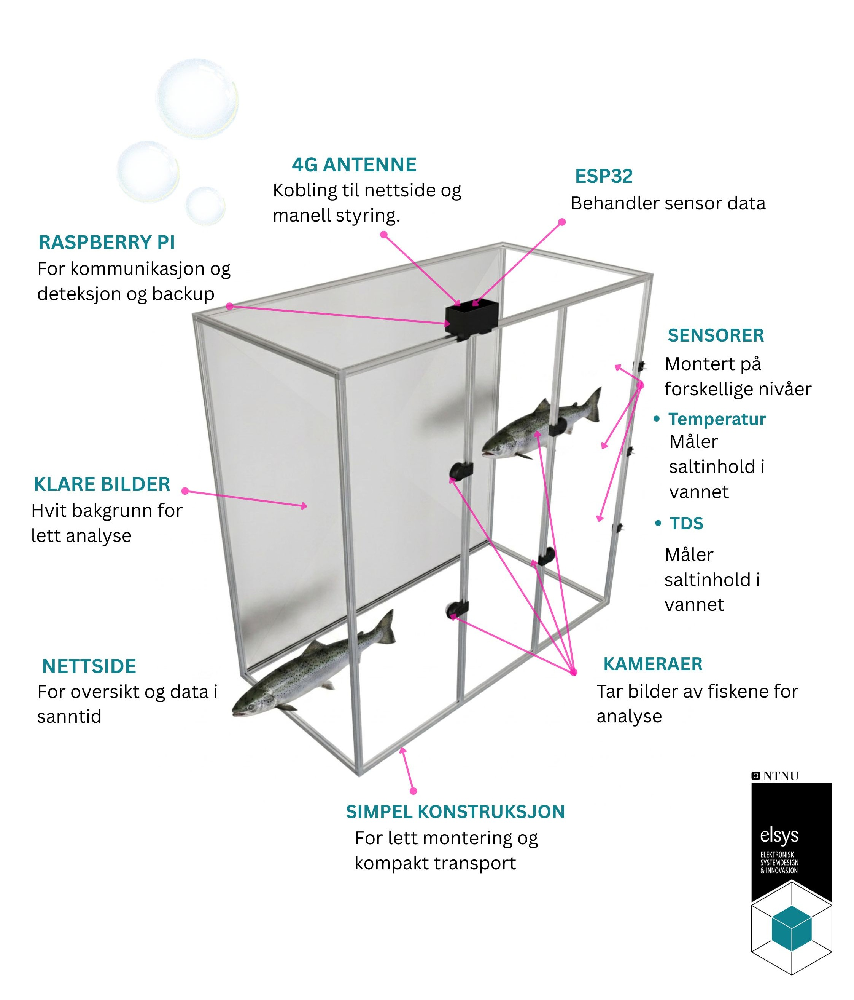

Villaksen i Norge er klassifisert som nært truet på den norske rødlista, og en av de raskest voksende truslene er den invaderende pukkellaksen. Forvaltning og forskning på den norske laksefiskbestanden tar i dag bruk sorteringssystemer og overvåkningsløsninger, men disse er begrenset til bruk i elver. Dette prosjektet utvikler en komplett overvåkning/telle løsning samt datainnsalming av vann til bruk i sund. Systemet har som mål å gi nyttig informasjon til bruk i forvaltning og forskning om innsiget inn i fjordene før fisken går opp i elvene, et neglisjert område.
